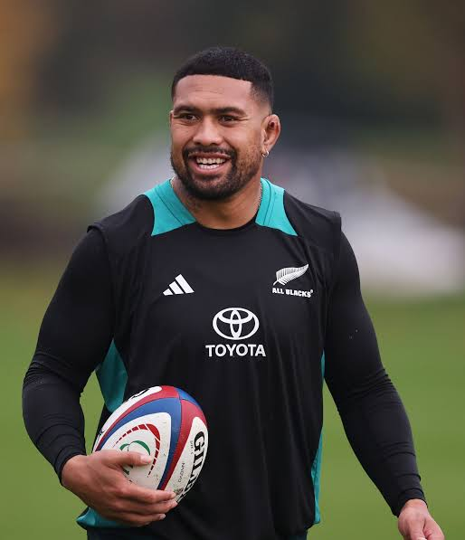
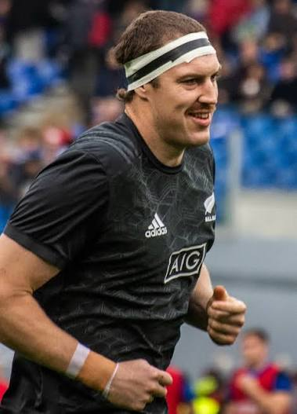
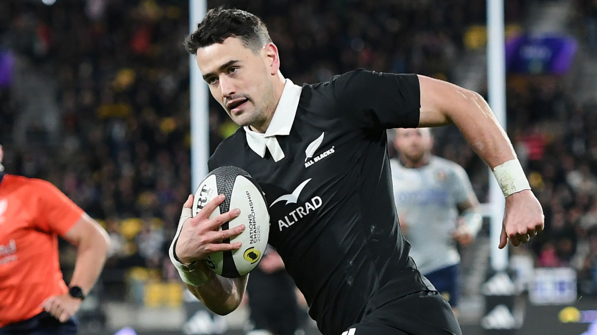

Kercimi tradicional qe shpreh forcen, unitetin dhe respektin e ekipit para çdo ndeshjeje nderkombetare.
Ekipi mbeshtetet në stervitje të rrepta, disiplin taktike dhe perkushtim maksimal ne çdo minutë të lojës.
Te veshesh fanellen e zez eshte pergjegjesi per te lene ekipin ne nje pozicion me te mire seç e gjete.
Shpejtsi e jashtezakonshme dhe vizion taktik ne fush.

Lider në fush i njohur per goditjet e fuqishme dhe mbrojtjen stoike.

Dominues ne scrum dhe kontrollin e topave te lart.

Finisher klinik me nje nga numrat me te lart te try-ave.
| Data | Kundra | Vendi |
|---|---|---|
| 15 Shtator | Afrika e Jugut (Springboks) | Auckland, NZ |
| 22 Shtator | Australia (Wallabies) | Sydney, AU |
| 05 Tetor | Anglia | Twickenham, UK |